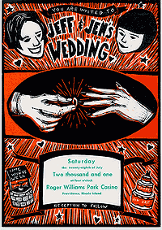

|
 One of my favorite parts of the whole wedding was our invitation. We
wanted something unique and personal, so we asked our friend Bryce McCloud
to design and print a custom invitation especially for us. The invitation
formed the basis of all the printed pieces for the wedding. We met Bryce while living in Nashville. He runs his own small print shop (Isle of Printing) using vintage printing presses. His work includes both letterpress (using traditional hand-set type) and larger poster-style printing, like our invitation. Bryce is a master illustrator, superb printer, and a true artist. The invitation started as a sketch on paper that was then transferred to a linoleum block and hand-carved for printing. |